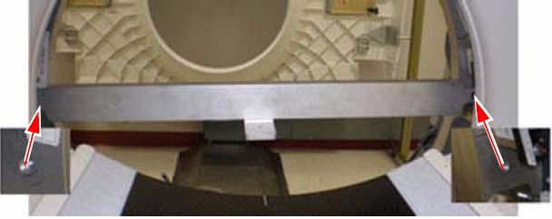

The bolts can be installed using an 8 mm Allen wrench. Be careful not to bump the alignment light; the mounting space is tight near the alignment light. Tighten bolts until both are snug.
Do not drop bolts or the bar on the collimator faceplate. Attach the bar as shown in Illustration 1.
Using a minimum 223 mm (9 in.) level placed on the attached bar, level the bar by rotating the gantry.
Illustration 1: Alignment Bar Installation Location
